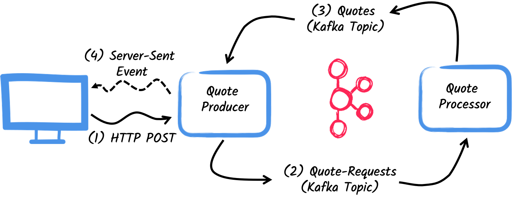
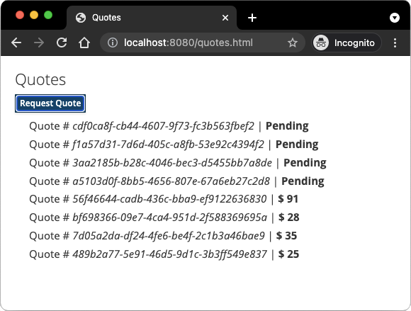

Getting Started to Quarkus Messaging with Apache Kafka
This guide demonstrates how your Quarkus application can utilize Quarkus Messaging to interact with Apache Kafka.
先决条件
要完成这个指南，你需要：
-
大概15分钟
-
编辑器
-
JDK 17+ installed with
JAVA_HOMEconfigured appropriately -
Apache Maven 3.9.8
-
Docker and Docker Compose or Podman, and Docker Compose
-
如果你愿意的话，还可以选择使用Quarkus CLI
-
如果你想构建原生可执行程序，可以选择安装Mandrel或者GraalVM，并正确配置(或者使用Docker在容器中进行构建)
应用结构
In this guide, we are going to develop two applications communicating with Kafka. The first application sends a quote request to Kafka and consumes Kafka messages from the quote topic. The second application receives the quote request and sends a quote back.

The first application, the producer, will let the user request some quotes over an HTTP endpoint.
For each quote request a random identifier is generated and returned to the user, to mark the quote request as pending.
At the same time, the generated request id is sent over a Kafka topic quote-requests.

The second application, the processor, will read from the quote-requests topic, put a random price to the quote, and send it to a Kafka topic named quotes.
Lastly, the producer will read the quotes and send them to the browser using server-sent events. The user will therefore see the quote price updated from pending to the received price in real-time.
解决方案
我们建议你按照下面章节中的说明，一步一步地创建应用程序。但是，你可以直接转到已完成的示例。
克隆 Git 仓库: git clone -b 3.15 https://github.com/quarkusio/quarkus-quickstarts.git ，或下载一个 存档 。
The solution is located in the kafka-quickstart directory.
创建Maven项目
首先，我们需要创建两个项目： producer 和 processor 。
要创建 producer 项目，请在终端中运行：
For Windows users:
-
If using cmd, (don’t use backward slash
\and put everything on the same line) -
If using Powershell, wrap
-Dparameters in double quotes e.g."-DprojectArtifactId=kafka-quickstart-producer"
This command creates the project structure and selects two Quarkus extensions we will be using:
-
Quarkus REST (formerly RESTEasy Reactive) and its Jackson support (to handle JSON) to serve the HTTP endpoint.
-
The Kafka connector for Reactive Messaging
要创建 processor 项目，请在同一目录下运行：
For Windows users:
-
If using cmd, (don’t use backward slash
\and put everything on the same line) -
If using Powershell, wrap
-Dparameters in double quotes e.g."-DprojectArtifactId=kafka-quickstart-processor"
At that point, you should have the following structure:
.
├── kafka-quickstart-processor
│ ├── README.md
│ ├── mvnw
│ ├── mvnw.cmd
│ ├── pom.xml
│ └── src
│ └── main
│ ├── docker
│ ├── java
│ └── resources
│ └── application.properties
└── kafka-quickstart-producer
├── README.md
├── mvnw
├── mvnw.cmd
├── pom.xml
└── src
└── main
├── docker
├── java
└── resources
└── application.properties在你喜欢的IDE中打开这两个项目。
|
开发服务
No need to start a Kafka broker when using the dev mode or for tests. Quarkus starts a broker for you automatically. See Dev Services for Kafka for details. |
Quote对象
The Quote class will be used in both producer and processor projects.
For the sake of simplicity, we will duplicate the class.
In both projects, create the src/main/java/org/acme/kafka/model/Quote.java file, with the following content:
package org.acme.kafka.model;
public class Quote {
public String id;
public int price;
/**
* Default constructor required for Jackson serializer
*/
public Quote() { }
public Quote(String id, int price) {
this.id = id;
this.price = price;
}
@Override
public String toString() {
return "Quote{" +
"id='" + id + '\'' +
", price=" + price +
'}';
}
}JSON representation of Quote objects will be used in messages sent to the Kafka topic
and also in the server-sent events sent to web browsers.
Quarkus has built-in capabilities to deal with JSON Kafka messages. In a following section, we will create serializer/deserializer classes for Jackson.
发送报价请求
Inside the producer project, create the src/main/java/org/acme/kafka/producer/QuotesResource.java file and add the following content:
package org.acme.kafka.producer;
import java.util.UUID;
import jakarta.ws.rs.GET;
import jakarta.ws.rs.POST;
import jakarta.ws.rs.Path;
import jakarta.ws.rs.Produces;
import jakarta.ws.rs.core.MediaType;
import org.acme.kafka.model.Quote;
import org.eclipse.microprofile.reactive.messaging.Channel;
import org.eclipse.microprofile.reactive.messaging.Emitter;
@Path("/quotes")
public class QuotesResource {
@Channel("quote-requests")
Emitter<String> quoteRequestEmitter; (1)
/**
* Endpoint to generate a new quote request id and send it to "quote-requests" Kafka topic using the emitter.
*/
@POST
@Path("/request")
@Produces(MediaType.TEXT_PLAIN)
public String createRequest() {
UUID uuid = UUID.randomUUID();
quoteRequestEmitter.send(uuid.toString()); (2)
return uuid.toString(); (3)
}
}| 1 | 注入一个响应式消息 Emitter ，来向 quote-requests 通道发送消息。 |
| 2 | On a post request, generate a random UUID and send it to the Kafka topic using the emitter. |
| 3 | Return the same UUID to the client. |
The quote-requests channel is going to be managed as a Kafka topic, as that’s the only connector on the classpath.
If not indicated otherwise, like in this example, Quarkus uses the channel name as topic name.
So, in this example, the application writes into the quote-requests topic.
Quarkus also configures the serializer automatically, because it finds that the Emitter produces String values.
| 当你有多个连接器时，你需要在应用程序配置中指出你想要使用哪个连接器。 |
处理报价请求
Now let’s consume the quote request and give out a price.
Inside the processor project, create the src/main/java/org/acme/kafka/processor/QuotesProcessor.java file and add the following content:
package org.acme.kafka.processor;
import java.util.Random;
import jakarta.enterprise.context.ApplicationScoped;
import org.acme.kafka.model.Quote;
import org.eclipse.microprofile.reactive.messaging.Incoming;
import org.eclipse.microprofile.reactive.messaging.Outgoing;
import io.smallrye.reactive.messaging.annotations.Blocking;
/**
* A bean consuming data from the "quote-requests" Kafka topic (mapped to "requests" channel) and giving out a random quote.
* The result is pushed to the "quotes" Kafka topic.
*/
@ApplicationScoped
public class QuotesProcessor {
private Random random = new Random();
@Incoming("requests") (1)
@Outgoing("quotes") (2)
@Blocking (3)
public Quote process(String quoteRequest) throws InterruptedException {
// simulate some hard working task
Thread.sleep(200);
return new Quote(quoteRequest, random.nextInt(100));
}
}| 1 | Indicates that the method consumes the items from the requests channel. |
| 2 | Indicates that the objects returned by the method are sent to the quotes channel. |
| 3 | 表示该处理是 blocking ，不能在调用者线程上运行。 |
For every Kafka record from the quote-requests topic, Reactive Messaging calls the process method, and sends the returned Quote object to the quotes channel.
In this case, we need to configure the channel in the application.properties file, to configures the requests and quotes channels:
%dev.quarkus.http.port=8081
# Configure the incoming `quote-requests` Kafka topic
mp.messaging.incoming.requests.topic=quote-requests
mp.messaging.incoming.requests.auto.offset.reset=earliestNote that in this case we have one incoming and one outgoing connector configuration, each one distinctly named. The configuration properties are structured as follows:
mp.messaging.[outgoing|incoming].{channel-name}.property=value
channel-name 片段必须与 @Incoming 和 @Outgoing 注解中设定的值相匹配:
-
quote-requests→ Kafka topic from which we read the quote requests -
quotes→ Kafka topic in which we write the quotes
|
More details about this configuration is available on the Producer configuration and Consumer configuration section from the Kafka documentation. These properties are configured with the prefix |
mp.messaging.incoming.requests.auto.offset.reset=earliest instructs the application to start reading the topics from the first offset, when there is no committed offset for the consumer group.
In other words, it will also process messages sent before we start the processor application.
There is no need to set serializers or deserializers. Quarkus detects them, and if none are found, generates them using JSON serialization.
接收报价
Back to our producer project.
Let’s modify the QuotesResource to consume quotes from Kafka and send them back to the client via Server-Sent Events:
import io.smallrye.mutiny.Multi;
...
@Channel("quotes")
Multi<Quote> quotes; (1)
/**
* Endpoint retrieving the "quotes" Kafka topic and sending the items to a server sent event.
*/
@GET
@Produces(MediaType.SERVER_SENT_EVENTS) (2)
public Multi<Quote> stream() {
return quotes; (3)
}| 1 | 使用 @Channel 修饰符注入 quotes 通道 |
| 2 | 表示内容是使用 Server Sent Events 发送的 |
| 3 | 返回流 (Reactive Stream) 。 |
No need to configure anything, as Quarkus will automatically associate the quotes channel to the quotes Kafka topic.
It will also generate a deserializer for the Quote class.
|
Message serialization in Kafka
In this example we used Jackson to serialize/deserialize Kafka messages. For more options on message serialization, see Kafka Reference Guide - Serialization. We strongly suggest adopting a contract-first approach using a schema registry. To learn more about how to use Apache Kafka with the schema registry and Avro, follow the Using Apache Kafka with Schema Registry and Avro guide for Avro or you can follow the Using Apache Kafka with Schema Registry and JSON Schema guide.. |
HTML页面
Final touch, the HTML page requesting quotes and displaying the prices obtained over SSE.
Inside the producer project, create the src/main/resources/META-INF/resources/quotes.html file with the following content:
<!DOCTYPE html>
<html lang="en">
<head>
<meta charset="UTF-8">
<title>Prices</title>
<link rel="stylesheet" type="text/css"
href="https://cdnjs.cloudflare.com/ajax/libs/patternfly/3.24.0/css/patternfly.min.css">
<link rel="stylesheet" type="text/css"
href="https://cdnjs.cloudflare.com/ajax/libs/patternfly/3.24.0/css/patternfly-additions.min.css">
</head>
<body>
<div class="container">
<div class="card">
<div class="card-body">
<h2 class="card-title">Quotes</h2>
<button class="btn btn-info" id="request-quote">Request Quote</button>
<div class="quotes"></div>
</div>
</div>
</div>
</body>
<script src="https://code.jquery.com/jquery-3.6.0.min.js"></script>
<script>
$("#request-quote").click((event) => {
fetch("/quotes/request", {method: "POST"})
.then(res => res.text())
.then(qid => {
var row = $(`<h4 class='col-md-12' id='${qid}'>Quote # <i>${qid}</i> | <strong>Pending</strong></h4>`);
$(".quotes").prepend(row);
});
});
var source = new EventSource("/quotes");
source.onmessage = (event) => {
var json = JSON.parse(event.data);
$(`#${json.id}`).html((index, html) => {
return html.replace("Pending", `\$\xA0${json.price}`);
});
};
</script>
</html>Nothing spectacular here. When the user clicks the button, HTTP request is made to request a quote, and a pending quote is added to the list. On each quote received over SSE, the corresponding item in the list is updated.
让它运行起来
You just need to run both applications. In one terminal, run:
mvn -f producer quarkus:dev在另外一个终端中，运行:
mvn -f processor quarkus:devQuarkus starts a Kafka broker automatically, configures the application and shares the Kafka broker instance between different applications. See Dev Services for Kafka for more details.
在你的浏览器中打开 http://localhost:8080/quotes.html ，点击按钮来请求一些报价。
在JVM或本地模式下运行
When not running in dev or test mode, you will need to start your Kafka broker.
You can follow the instructions from the Apache Kafka website or create a docker-compose.yaml file with the following content:
version: '3.5'
services:
zookeeper:
image: quay.io/strimzi/kafka:0.41.0-kafka-3.7.0
command: [
"sh", "-c",
"bin/zookeeper-server-start.sh config/zookeeper.properties"
]
ports:
- "2181:2181"
environment:
LOG_DIR: /tmp/logs
networks:
- kafka-quickstart-network
kafka:
image: quay.io/strimzi/kafka:0.41.0-kafka-3.7.0
command: [
"sh", "-c",
"bin/kafka-server-start.sh config/server.properties --override listeners=$${KAFKA_LISTENERS} --override advertised.listeners=$${KAFKA_ADVERTISED_LISTENERS} --override zookeeper.connect=$${KAFKA_ZOOKEEPER_CONNECT}"
]
depends_on:
- zookeeper
ports:
- "9092:9092"
environment:
LOG_DIR: "/tmp/logs"
KAFKA_ADVERTISED_LISTENERS: PLAINTEXT://kafka:9092
KAFKA_LISTENERS: PLAINTEXT://0.0.0.0:9092
KAFKA_ZOOKEEPER_CONNECT: zookeeper:2181
networks:
- kafka-quickstart-network
producer:
image: quarkus-quickstarts/kafka-quickstart-producer:1.0-${QUARKUS_MODE:-jvm}
build:
context: producer
dockerfile: src/main/docker/Dockerfile.${QUARKUS_MODE:-jvm}
depends_on:
- kafka
environment:
KAFKA_BOOTSTRAP_SERVERS: kafka:9092
ports:
- "8080:8080"
networks:
- kafka-quickstart-network
processor:
image: quarkus-quickstarts/kafka-quickstart-processor:1.0-${QUARKUS_MODE:-jvm}
build:
context: processor
dockerfile: src/main/docker/Dockerfile.${QUARKUS_MODE:-jvm}
depends_on:
- kafka
environment:
KAFKA_BOOTSTRAP_SERVERS: kafka:9092
networks:
- kafka-quickstart-network
networks:
kafka-quickstart-network:
name: kafkaquickstartMake sure you first build both applications in JVM mode with:
mvn -f producer package
mvn -f processor packageOnce packaged, run docker-compose up.
| This is a development cluster, do not use in production. |
You can also build and run our applications as native executables. First, compile both applications as native:
mvn -f producer package -Dnative -Dquarkus.native.container-build=true
mvn -f processor package -Dnative -Dquarkus.native.container-build=trueRun the system with:
export QUARKUS_MODE=native
docker-compose up --build进一步探索
This guide has shown how you can interact with Kafka using Quarkus. It utilizes SmallRye Reactive Messaging to build data streaming applications.
For the exhaustive list of features and configuration options, check the Reference guide for Apache Kafka Extension.
|
In this guide we explore how we can interact with Apache Kafka using the Quarkus Messaging extensions. Quarkus extension for Kafka also allows using Kafka clients directly. |